Hansel
and Gretel
Once upon a time...
Scroll to start the journey!
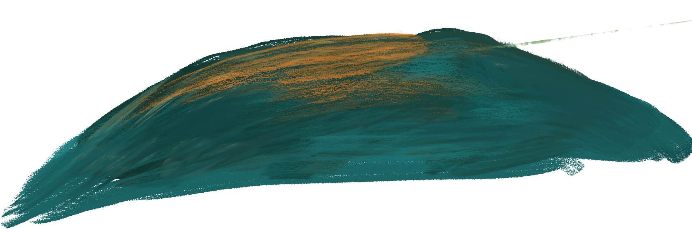
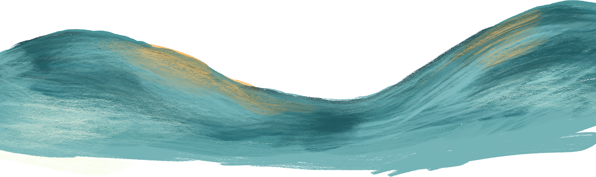

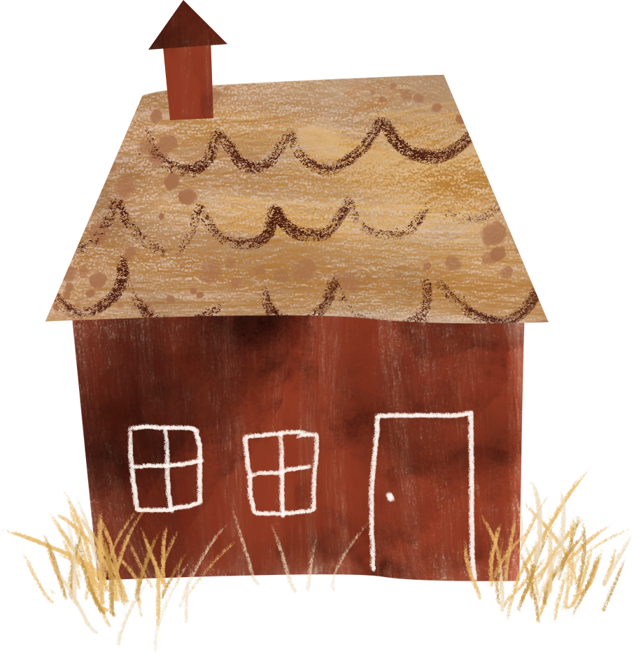
All night long the wife harped onandonat her husband till, at dawn, he led Hansel and Gretel away into the forest.
But as they went into the depths of the trees, Hansel left a trail of crumbs on the mossy green ground. At a certain point, the two children found they really were alone.
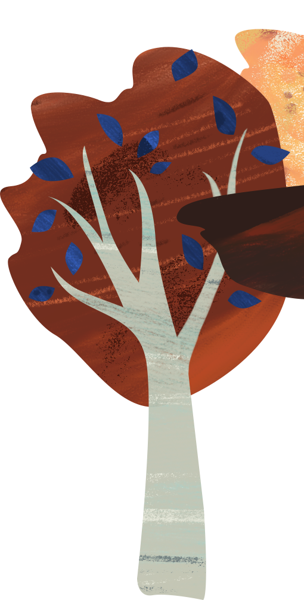
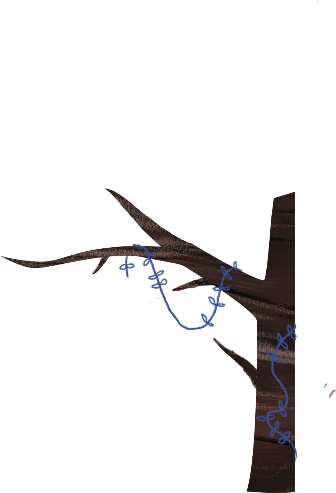
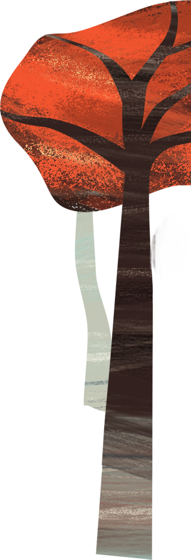
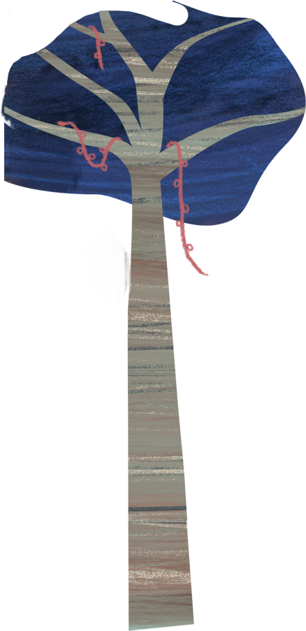
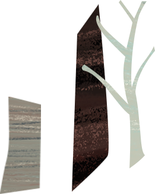
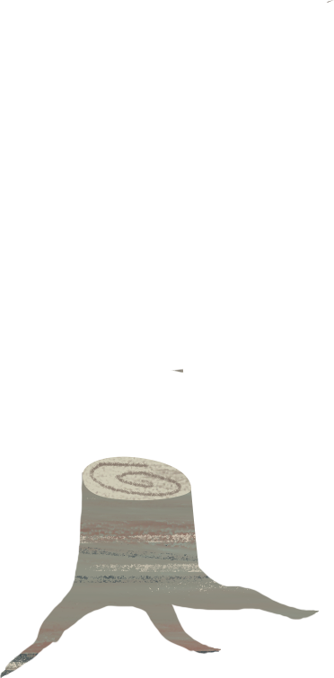
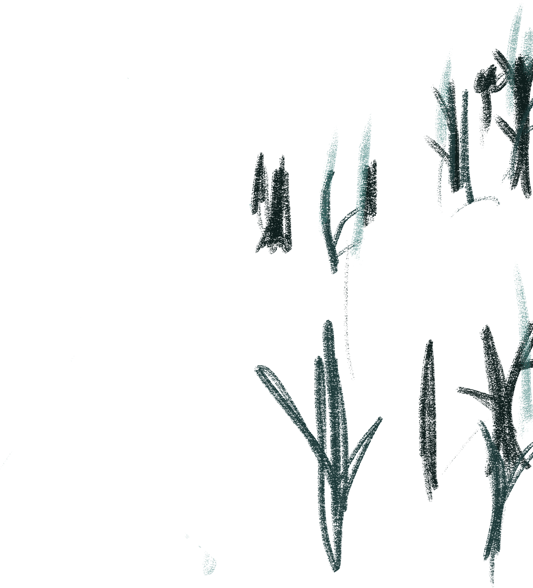
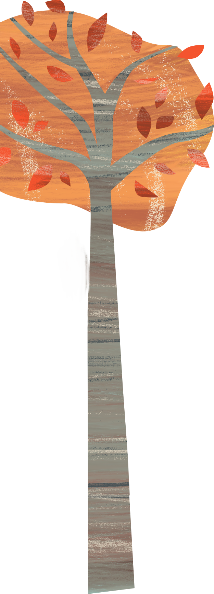
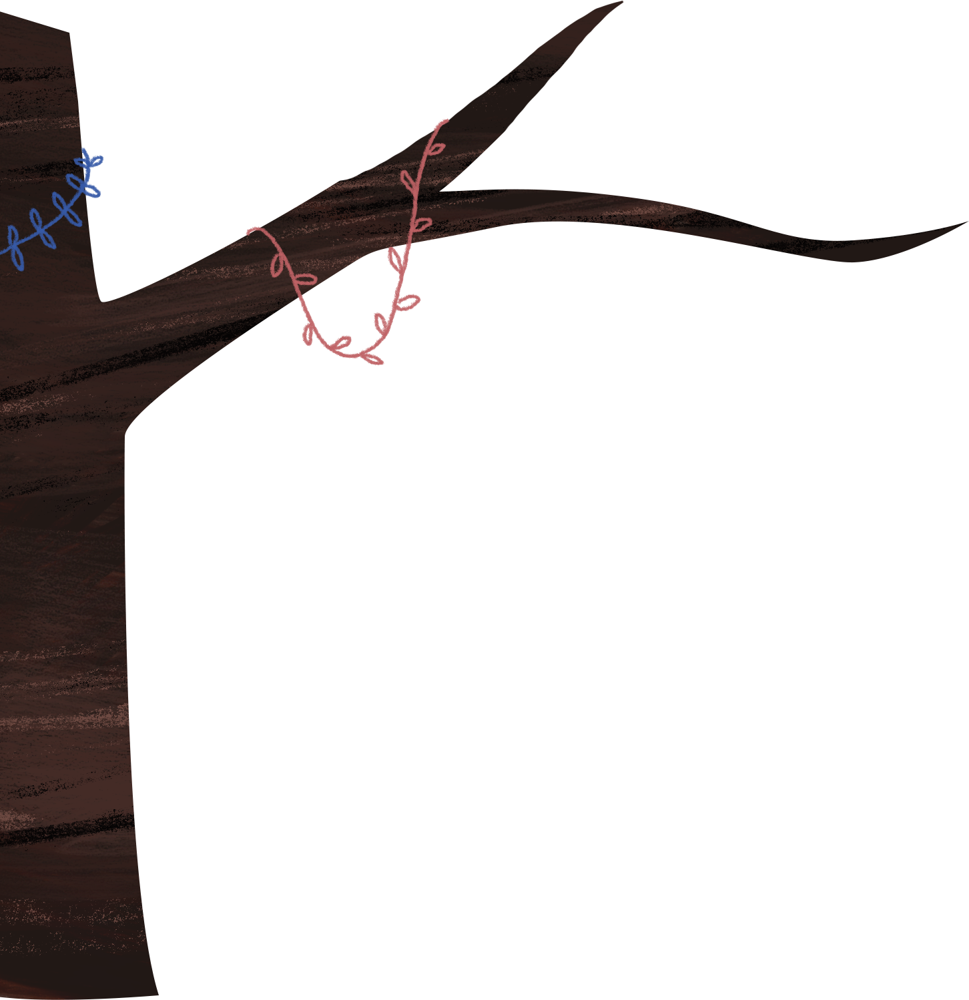
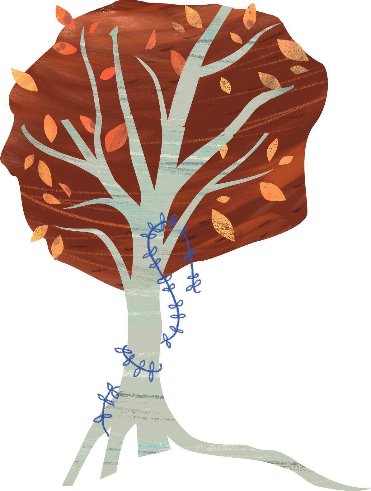
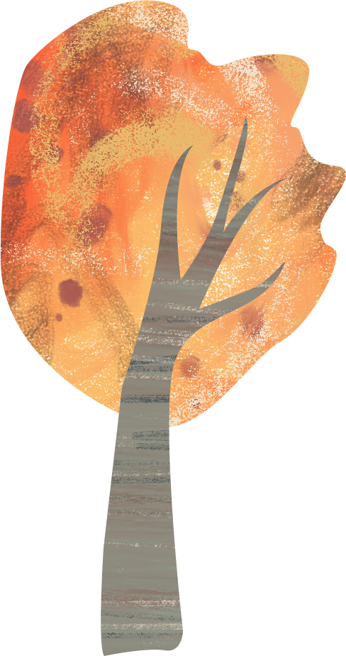
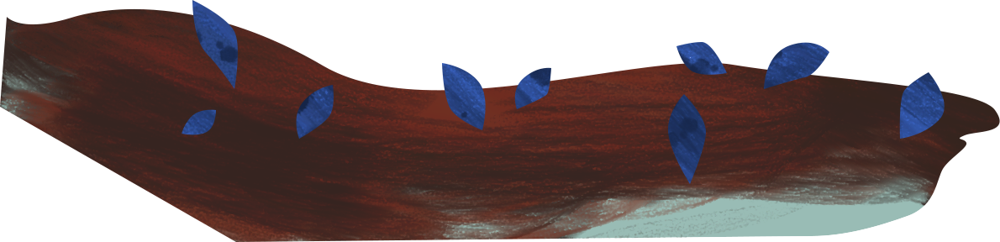
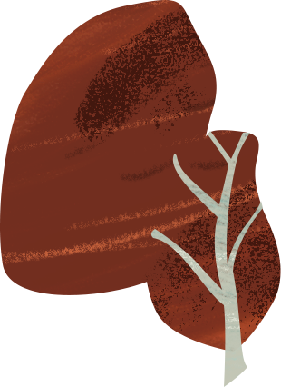
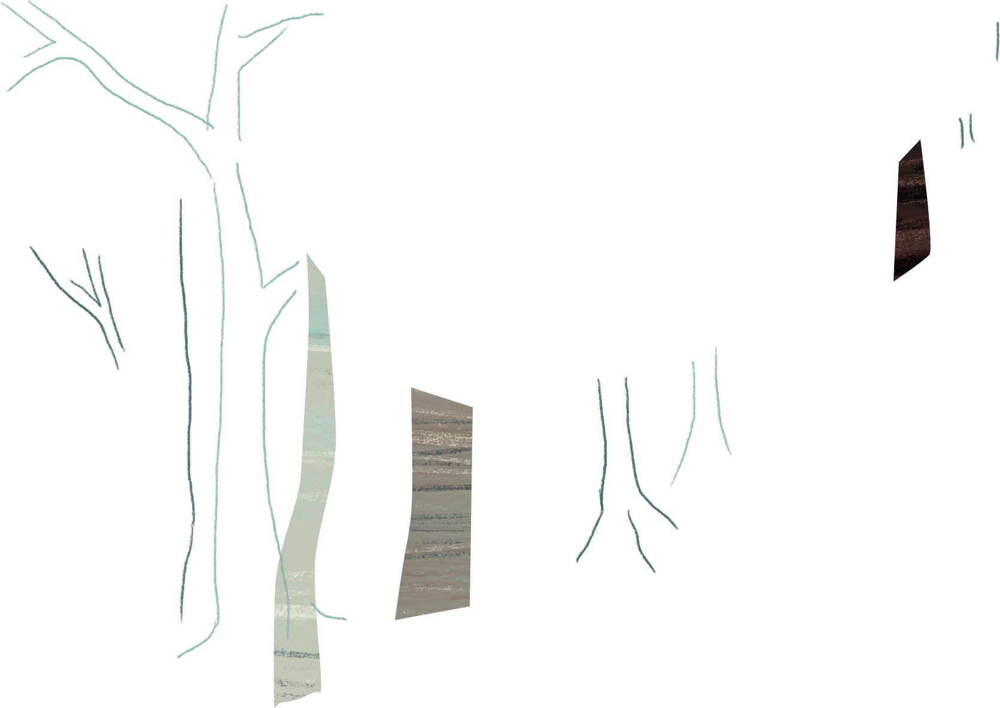
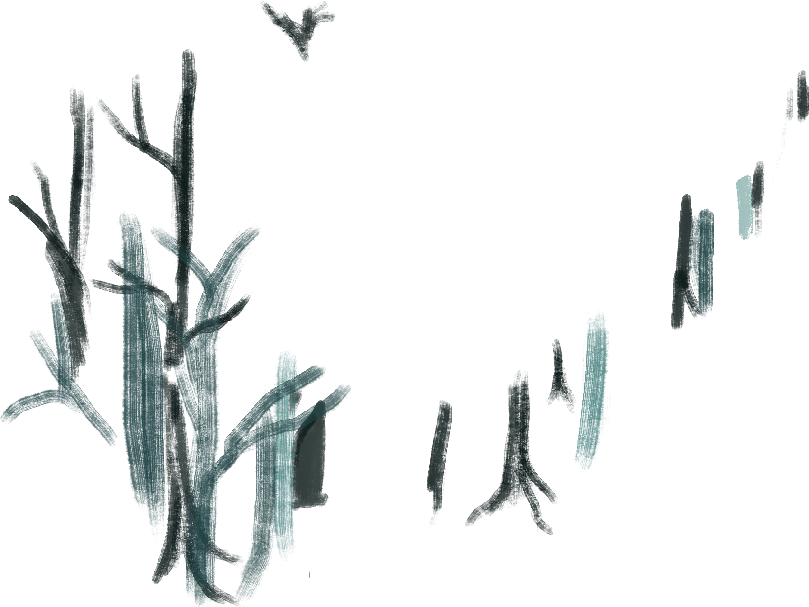